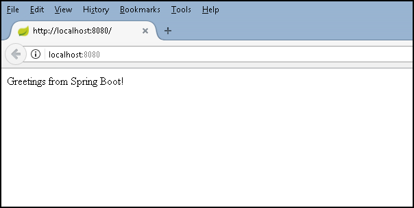
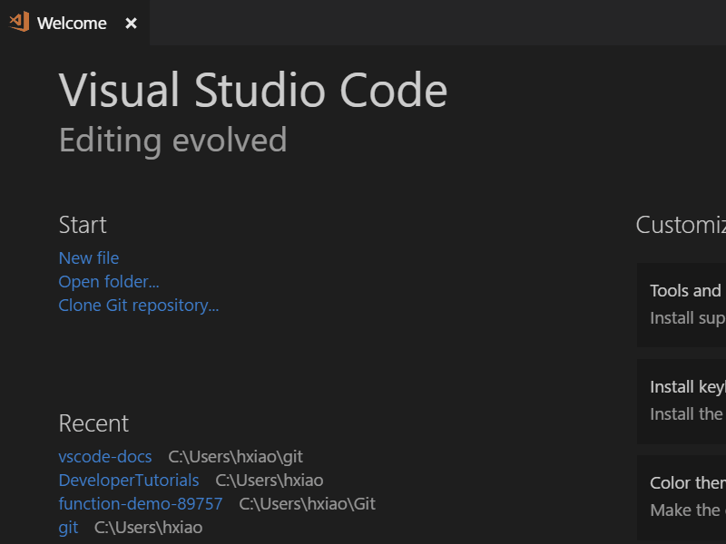
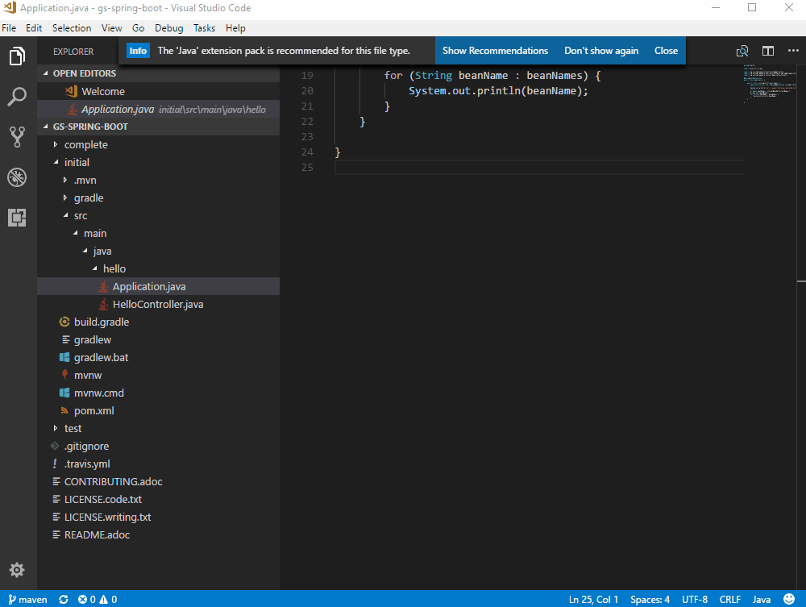
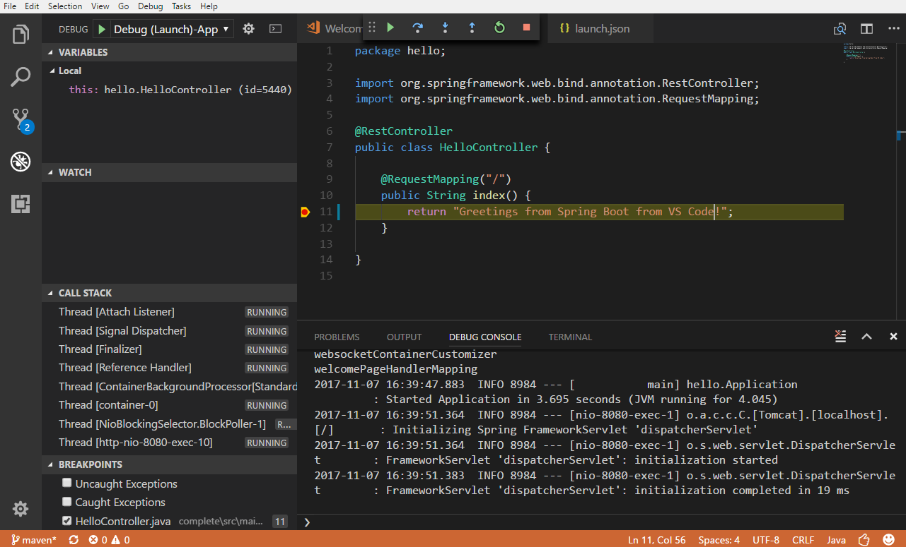
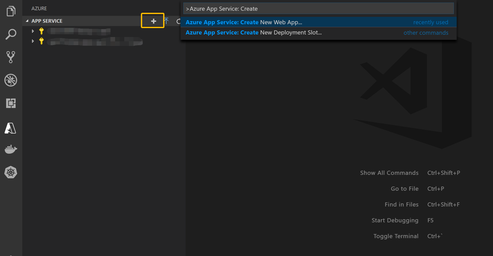
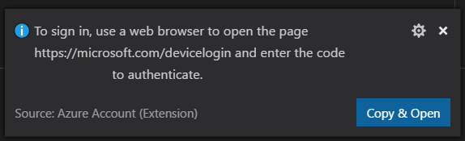
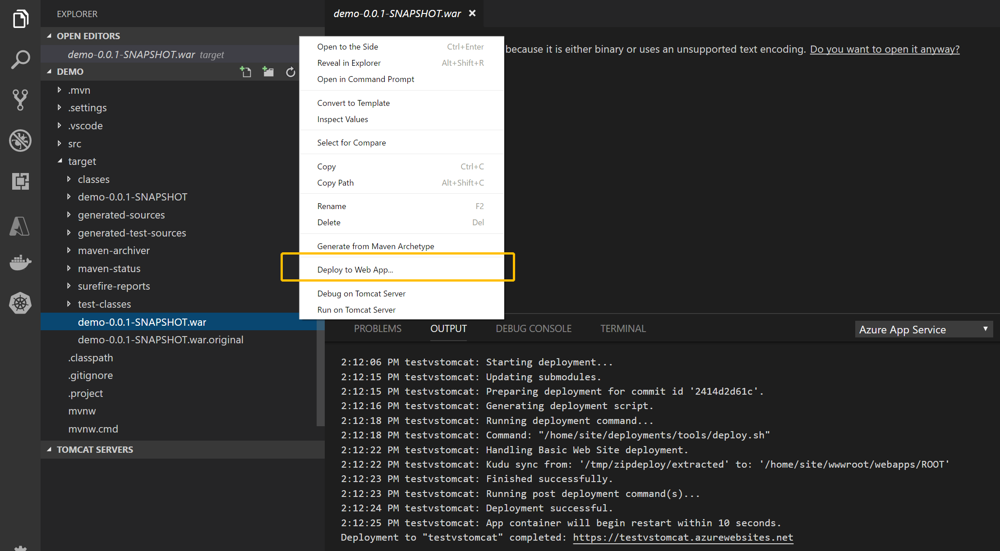
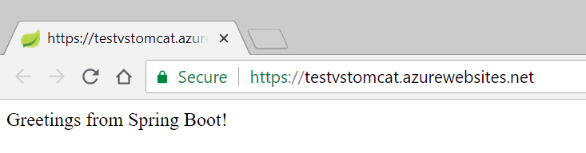

Java Web Apps with Visual Studio Code
This tutorial shows you how to create a Java web application with Visual Studio Code. You'll learn how to run, debug, and edit the Java web app locally and eventually on the cloud.
Scenario
A simple Spring Boot Getting Started web app

Before you begin
Before running and deploying this sample, you must have the Java SE Development Kit (JDK) and Apache Maven build tools on your local development environment. If you don't have, please install them.
Download and install the Java Extension Pack, which has JDK 11 included.
Note: The
JAVA_HOMEenvironment variable must be set to the install location of the JDK to complete this tutorial.
Download Apache Maven version 3 or greater:
Install Apache Maven for your local development environment:
Download and test the Spring Boot app
Clone the Spring Boot Getting Started sample project to your local machine. You can clone a Git repository with the Git: Clone command in the Command Palette (kb(workbench.action.showCommands)). Paste https://github.com/spring-guides/gs-spring-boot.git as the URL of the remote repository and then decide the parent directory under which to put the local repository. After that, open the complete folder within the cloned repository in VS Code by navigating to the folder and typing code ..
Note: You can install Visual Studio Code from https://code.visualstudio.com and Git from https://git-scm.com.

From within VS Code, open any of the Java files within the complete folder (for example src\main\java\hello\Application.java). If you don't have the Java language extensions installed for VS Code, you will be prompted to install the Microsoft Java Extension Pack. Follow the instructions and reload VS Code after the installation.

Once you have the Java Extension Pack installed, it will automatically build the project for you (this may take several minutes). You can run the application within VS Code by pressing kb(workbench.action.debug.start) and selecting the Java environment. The Java Debug extension will generate a debugging configuration file launch.json for you under a .vscode folder in your project. You can see build progress in the VS Code Status Bar and when everything is finished, the final active debug configuration is displayed.

You can learn more about how VS Code launches your application in Debugging Launch Configurations. Press kb(workbench.action.debug.start) again to launch the debugger.

Test the web app by browsing to http://localhost:8080 using a web browser. You should see the following message displayed: "Greetings from Spring Boot!".
Make a change
Let's now edit HelloController.java to change "Greetings from Spring Boot!" to something else like "Hello World". VS Code provides a great editing experience for Java, check out Editing and Navigating Code to learn about VS Code's editing and code navigation features.
Click the Restart button on the top of the editor to relaunch the app and see result by reloading the browser.

Debug the application
Set a breakpoint (kb(editor.debug.action.toggleBreakpoint)) in the application source code, and reload your browser to hit the breakpoint.

If you would like to learn more about debugging Java with VS Code, you can read Java Debugging.
Congratulations, you have your first Spring Boot web app running locally! Read on to learn how to host it in the cloud.
Deploy Web Apps to the cloud
We just built a Java web application and ran it locally. Now you will learn how to deploy from Visual Studio Code and run it on Azure in the cloud.
If you don't have an Azure subscription, you can sign up for a free Azure account. Create your free Azure account
Install the Azure App Service extension
The Azure App Service extension is used to create, manage, and deploy to Azure App Service with key features including:
- Create new Azure Web App/Deployment Slot
- Deploy to Azure Web App/Deployment Slot
- Start, stop, and restart the Azure Web App/Deployment Slot
- View a Web App's log files
- Swap Deployment Slots
To install the Azure App Service extension, open the Extensions view (kb(workbench.view.extensions)) and search for azure app service to filter the results. Select the Microsoft Azure App Service extension. For a more command-line Maven-centric experience, you can also check out the Maven plugin for Azure App Service Linux tutorial.
Create a new Web App on Azure
Once the extension is installed, you can take the following steps to create a new Web App on Azure.
- Click Create New Project button on the APP SERVICE Explorer view.
- Select a subscription.
- Enter a unique name for the new Web App.
- Select a location for the new Web App.
- Select the OS as
Linux. - Select the runtime of the Web App, for example
Tomcat 8.5 (JRE8).

Build and deploy to a Web App
The deploy process leverages the Azure Account extension (installed along with the Azure App Service extension as a dependency) and you need to sign in with your Azure subscription. If you do not have an Azure subscription, sign up today for a free 30 day account and get $200 in Azure Credits to try out any combination of Azure services.
To sign in to Azure, run Azure: Sign In from the Command Palette (kb(workbench.action.showCommands)). You can then sign in to your account using the Device Login flow. Select Copy & Open to open your default browser.

Paste in the access code and continue the sign in process.

Once you have signed in, you can open the command prompt or terminal window and build the project using Maven commands. This will generate a new war or jar artifact in the target directory.
mvn clean package
After building the project, open the target directory in VS Code Explorer. Right-click on the artifact and choose Deploy to Web App, and follow the prompts to choose the Web App for your deployment.

Open the Output window in VS Code to view the deployment logs. Once the deployment is completed, it will print out the URL for your Web App. Click the link to open it in a browser, you can see the web app running on Azure!

Note: For more advanced features of App Service, you can check out the Azure App Service extension.
Connect with data services
Azure Cosmos DB is a globally distributed database service that allows developers to work with data using a variety of standard APIs, such as SQL, MongoDB, Cassandra, Graph, and Table.
The Spring Boot Starter makes it easy to store data in and retrieve data from your Azure Cosmos DB with SQL API.
Create an Azure Cosmos DB entity on Azure
- Go to Azure portal and click the '+' to Create a resource.
- Click Databases, and then click Azure Cosmos DB to create your database.
- Select SQL (Document DB) API and type in other information for your database.
- Navigate to the database you have created, click Keys, and copy your URI and PRIMARY KEY for your database.
Config your project
You can start from the Spring Data Azure Cosmos DB Sample Project.
Navigate to
src/main/resourcesand openapplication.properties. Replace below properties inapplication.propertieswith information of your database.azure.documentdb.uri=your-documentdb-uri azure.documentdb.key=your-documentdb-key azure.documentdb.database=your-documentdb-databasename
Run and debug the application
You can press kb(workbench.action.debug.start) to run your application. To check the result, open Azure portal and access your Cosmos DB. Click Data Explorer, and next choose Documents. You will see data being shown if it is successfully written into Cosmos DB. You can also browse your data entries in Cosmos DB with Azure Databases extension.
After setting a breakpoint (kb(editor.debug.action.toggleBreakpoint)) in your source code, refresh your browser to hit the breakpoint. Details about debugging can be found in Java Debugging
Alternatively, you can also use Maven to package and run your project as steps below:
Navigate to the directory
azure-spring-bootand run the command.mvn installNavigate to the directory
azure-documentdb-spring-boot-sampleand run the command.mvn package java -jar target/azure-documentdb-spring-boot-sample-0.0.1-SNAPSHOT.jar
Next steps
- To containerize and deploy a web application, check out the Docker Container Tutorial.
- To learn more about Java Debugging features, see the Java Debugging Tutorial.